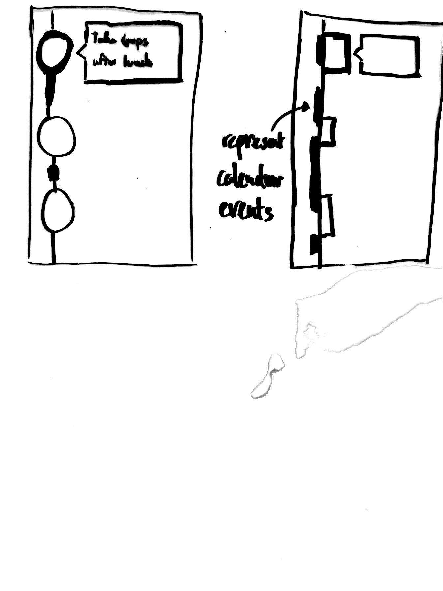
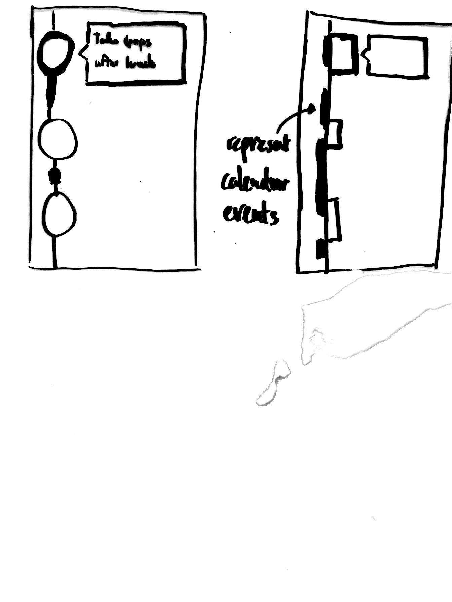

Design Development
Connecting back to the Needs Analysis
Our design idea is to create a product that will help the user remember to take their medication or supplement. From our user interviews, we noticed that stress makes the user deviate from their routine and forget to take their medicine. Therefore we wanted to create a product that is helping the user maintaining their routine in a less stressful way. We researched current products and found that most of the apps is reminding when the user is busy doing something else, which makes the element of taking medicine into something stressful. We wanted to create soft (low stress) reminders which would remind the user in the right way at the right time.
We started with really breaking down what we observed to come up with a problem statement. We explored this through a method called “five why’s”. This is a method to explore the cause-and-effect relationships underlying a particular problem. The goal of the method is to clarify the problem and get to the root cause by asking why repeatedly. Our five why’s process can be seen in photo below. We saw the categories of problems we were interested in, stress, routine change and travel. We decided that routine change was the one we wanted to focus on.
We understood that designing one product for our personas was going to be challenging since they have different routines in their everyday life. However, they all faced the same core problem: “Losing control in life causes forgetfulness including taking medication”. We continued by ideating around three important areas, stress, data gathering and reminders which created ideas to different features which could be applied in our product.
Storyboards
After narrowing down on the problem statement, we made storyboards of what we imagine our product would do. The photos below are some of the storyboards that we each came up with.
The general experience that we want our users to have is the following:
The user wakes up and realizes that s/he has a crazy day ahead through the morning notification from our app. The user will remember to take certain medication along with her/him when s/he leaves the room for the day. During the day, the user will be happy that s/he had control over the day and not forget to take the medication on time with the assistance of our application.
The important aspects of the story is that the app is designed to assist people in taking medication through crazy schedule. The application will achieve to do so through giving low stress reminders, as well as assisting them to gain control over their lives.
Narrowing Down Ideas
We started ideating on the space of low-stress reminders to address the problem that we were observing. Several key interfaces ideas came up during the process. (Photo below) The first interface was to have the app remind the users when they are at their “comfort zones”, where they would be relaxing and not bothered by other work happening. This was to avoid the stress when user are alerted by their phone at times when they are busy.
The second interface design we came up with is called “Butwaittheresmore”. This interface remind users to take pills through vibration and push notifications when they are locking their phone. Because the users would be looking at the phone anyways, such method of reminder by design make sure that they are not bothered when they are busy.
The third idea was to remind the users using chat bot. The chat bot would give texts to users to remind, and also check on the users on possible side effects and track their symptoms. By being more sociable, this idea would minimize the stress of getting reminders when the users are already stressed.
The final interface idea was gamification of habit creation and symptom tracking. The idea was to make it fun enough to allow users to feel low stress when getting reminders. We had several other ideas such as making a simple wearable such as a necklace to remind for which we have not made full sketches.
In order to narrow down on what interfaces we should really be focusing on, we came up with decision criteria to evaluate each of the interfaces. Below is the list of criteria that we used to evaluate ideas.
- Improve user routine
- Minimizes stress
- Low activation energy to set things up
- Remind the users when the they can actually act on the reminders
- Friendly
- Minimally disruptive
- Simplicity
- Discreet. Values users’ privacy.
- Hackable
- Cool
Each criterion was based around the problem statement. List of interface ideas were evaluated, and only the interfaces that satisfied most of the criteria were selected to be in our paper prototype. (Photo of decision matrix) Below is the list of the interfaces that were evaluated to have some potential.
- Help-me mode for crazy schedules
- Soft and intelligent reminders based on the user’s imported schedule, location, etc.
- Importing calendar from other applications
- Motion detection (walking, picking up the phone, etc) to give smarter reminders
- Giving time window to tasks
We based our paper prototype around the above list, and added components, such as gamification, that made sense as we further developed the idea.
Paper Prototype
The overall experience of the app can be separated in two components: off screen use and on screen use. Once the user imports their calendar (from Google Calendar for example), the app can work around their schedule and optimize reminders for times when they are free to take their medication. Hypothetically, we could also use GPS location and machine learning to optimize the algorithm. That being said, most of our design efforts have gone towards the user interface.
The home screen is designed to only immediately display what the user most likely cares about. We chose it to show a vertical, scrollable timeline with the current time being represented by a horizontal line 20% off the top of the screen by default. This is a compromise between showing what’s coming up in the next few hours, without having what just happened immediately disappear. On the left side, the timeline is composed of the calendar events overlaid with medication “blobs”. These represent when the app thinks the user should take any given medication. If it can be taken over a range of time, then the app will do its best to suggest a specific time (a circular blob), or display an elongated blob. If multiple meds need to be taken simultaneously, the blobs stack horizontally. They each have an icon, draw or photographed by the user. The right of the screen features a Pac Man figure, the application’s “mascot” (name not yet determined). Its main purpose is to confirm medicine intake, which is done by sliding it towards the blob in question. Since most people are familiar with the existence of Pac Man, the assumption is that the user will naturally want it to eat blobs. It also adds the the application’s friendliness by giving a personality to the algorithm telling the user when to take their medicine. PacMan also enables dialog-like interactions to change settings - such as changing the frequency of reminders when it detects travelling.
[ViewBloblPP]Tapping on a blob on the timeline brings up more information about the associated medication. Along with its name and icon, the window features a few possible “boards”, which are general purpose panels the user can swipe through. These include but are not limited to dosage, symptom tracking, remaining supply, list of side effects or doctor’s instruction. We chose this design because it scalable and customizable. We could conceivably retrieve most of this information through third party database, meaning the user wouldn’t have to type everything in. The window features the option to edit or delete the blob.
[AddBlobPP]When editing a blob, or adding one through the (+) blob in the bottom right corner, the user has the ability to change any of these fields. When editing the icon, they are greeted with a larger window with enough space to draw something, such as the pill’s shape, or take a picture, and potentially draw on it. This was motivated by the need to distinguish different blobs. Between drawing and taking a picture, the user has the freedom to represent their medication however works best for them.
There are a few other screens we think are important to the overall experience, though they are not as fleshed out. They all depend on the Pac Man figure talking directly to the user. If the user’s phone was out of battery for an extended period of time, Pac Man will greet them the next time the user launches the app, asking if the user took the pills they were supposed to in that time. In the spirit of minimizing stress and surprises, Pac Man would greet the user in the morning to let them know when it fit the medication in their schedule.
User Test Results
Overall, our users found the app interface friendly, but struggled with the importing of data and customizing information. Our users intuitively understood how to indicate they’ve taken the medicine, and most knew how to add information and view information about the medicines. All the users preferred to have a way to manually set the times for taking the medicine. We got positive feedback about suggesting times, but we also had recommendations for how to improve the suggestions, like prioritizing morning and evening. They also noted that the core interactions (taking, viewing medications) were easier and quicker than others, like adding medication, tracking side effects and symptoms, and checking previous and future medication, which all required more clicks and scrolling.
We used terms such as “board” or generic placeholders in the app, but the meaning of these terms wasn’t clear to all the users, although seeing examples helped the users guess what these terms meant.
We deliberately separated the setup process from the prototype, but this added to the confusion around what parts represented calendar events and what parts represented medicines to take (as well as their time windows). In future iterations we need to clarify the visual language and make it clear what each atomic component represents. One of the most important insights we got from user testing was to be much more intentional and clear about the text in the app. Much of the confusion about how to interact with the app came from unclear, ambiguous, or misleading text.
Design Development Artifacts - Archive
Portfolio of Design Ideas


Narrowing Ideas
Evaluation Based on User Criteria
Rough Prototyping, Interaction Flows, and Storyboarding


 



Paper Prototype


Powered by w3.css